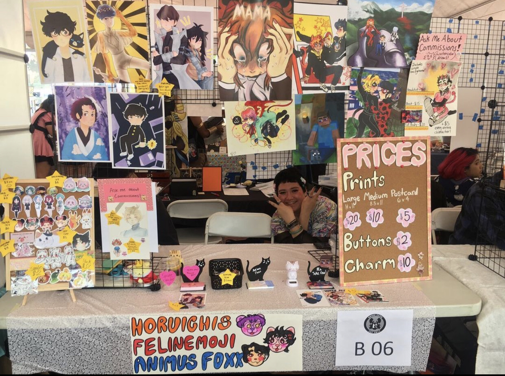
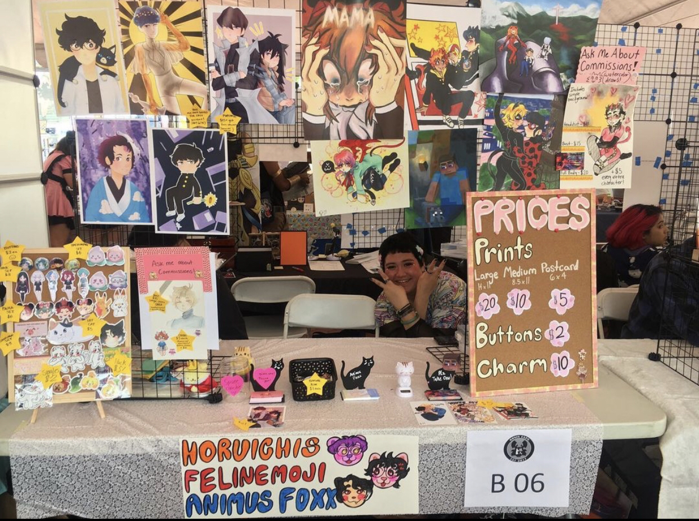
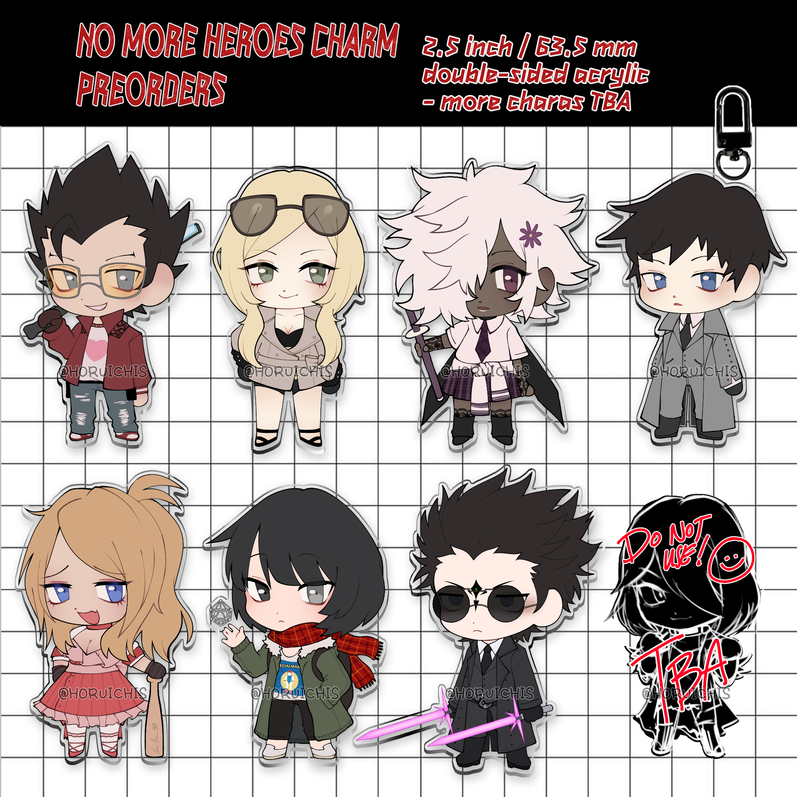
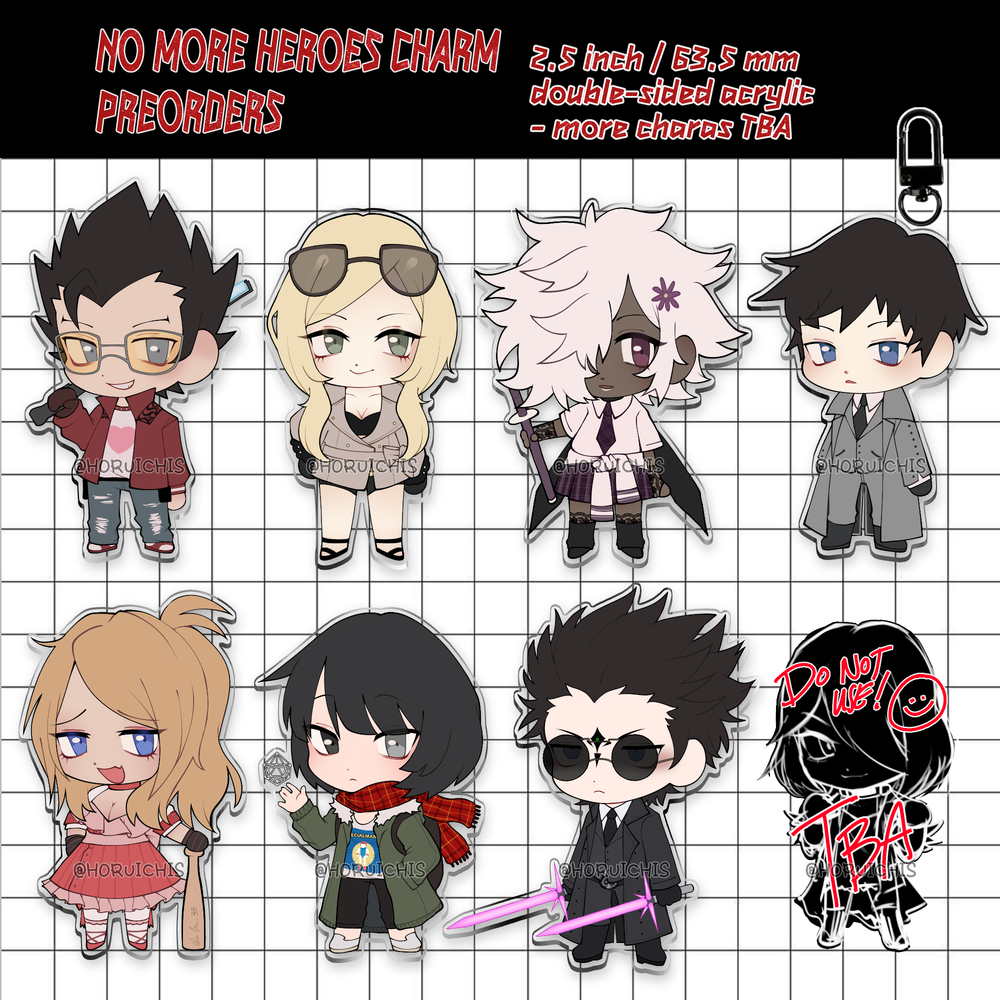
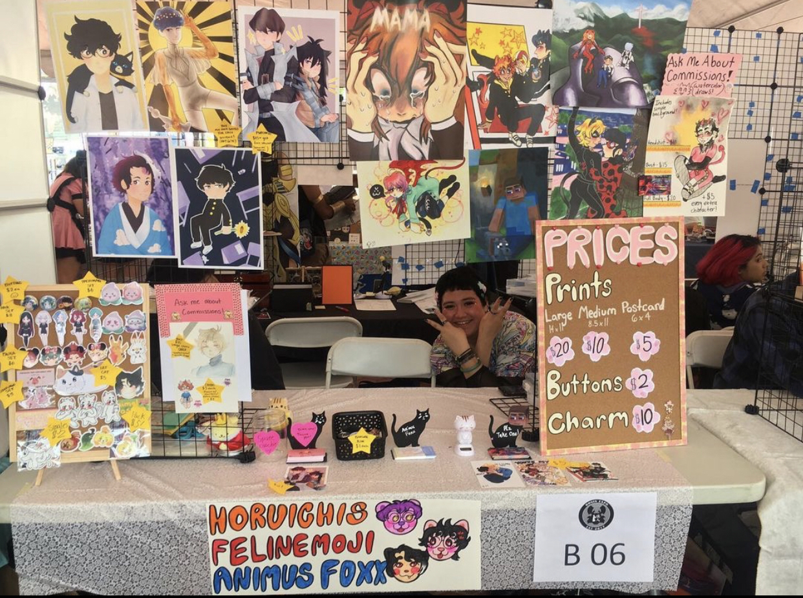
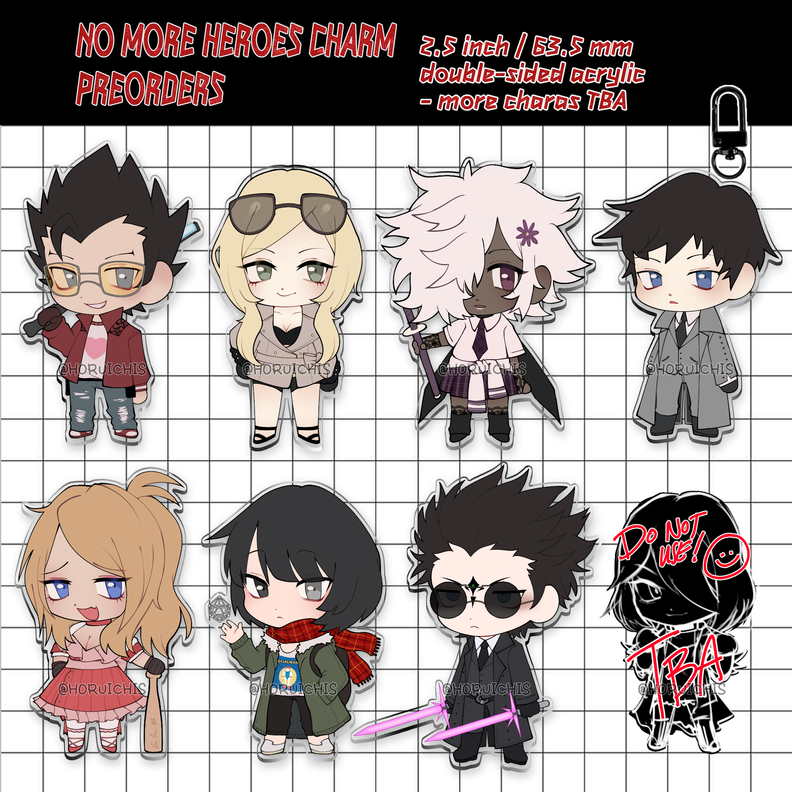

Ollie Hernandez
I love to be creative and share my passions with people of all kinds. Due to my hobby, I decided to create a small business that would allow me my own freedoms
to express myself and share my passion for art. While it is a blast to do what you love, it can be tiring when it comes to creating new samples and quality checking before selling
them on my shop. I am always taking advice and suggestions from my buyers to see what I can do to improve or what future types of products they would like to see. I take great pride
being able to package every order carefully and making sure I add some extras to show my appreciation for their support. My small business has been my main focus due to how easily manageable
it is while being a full time university student. Since starting in 2019, I have been able to test out multiple materials as well as improved my communication skills between my manufacturers and myself. Being able
to make sure stock arrives on time and is on par with the quality I am aiming for. With the increasing amount of orders, I have had to buy and learn new tools such as a cutting machine as well as lamination machines. These
tools have been investments but have made my job easier, as it is only me who manages the shop. I was able to take a step further by particpating in anime conventions by selling at their Artist Alleys, allowing me to promote
my merchandise in person, as well as showing a growth in my social media. Due to COVID-19, a lot of my plans involving tabling at other Californian conventions was halted due to everything closing. Since then, I have
had to open up an online shop and try to promote as much as possible through social media. I still have little to no confidence with how the world is operating, but I am hoping that once the safety improves
I will focus on selling in person again. I had the biggest boom late 2021, which required me to seek help from my family members when it came to packaging as well as only having a small desk space.
My previous work have always involved assisting people and informing them of services offered by either the Youth Center or Library. I would be given tasks to create posters and flyers to advertise upcoming programs
as well as assisting with movie night and craft-based programs. Library duties would require me to reorganize books, DVDs, and assiting individuals to utilize computer and printing services. Another would be to
maintain the peaceful and quiet atmosphere, requiring I speak to individuals who may be disrupting those around them. At times, I would be asked to organize books that will be sold by the library for low prices, making sure labels are removed and books are in
good condition.
Working as an intern at the UCLA Youth Source Center gave me a glimpse into office work, as well as how to properly interact with incoming individuals. Learning proper etiquette when
answering the phone, disposing of documents with senstitive information, as well as learning what the Youth Center offers to relay to individuals. I would be in charge of inputting
information into the online database being used and updating files that required. The Youth Center also gave me an oppurtunity to use my creativity when it came to creating posters and flyers, as well
as decorating the office for upcoming programs or holidays.
Experience
Intern
• Organizing and filing documents
• Inputting information into online database
• Answering phone calls and informing patrons of services offered
Volunteer
• Assisted with Children-focused programs involving crafts
• Set up movie night, organized books/magazines/DVDs alphabetically on shelves
• Created flyers and posters to announce upcoming programs
• Assisted patrons with using the computers, finding books, and printing
Founder & Small Business
• Good money management and organization for sending out invoices
• Using various art programs and drawing tablet to create artwork
• Promoting product and work through social media
• Shipping and packaging all sales safely
Education
University of California Riverside
Santa Monica College
Santa Monica College
Portfolio
 

 


